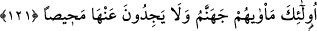

nefsin şehevî duygularını yerine getirme gibi dünyâ lezzetlerine kavuşmaları için “söz
verir ve” öldükten sonra dirilme, ba’s, hesap ve cezânın olmadığı veyâ amel etmeden
uhrevî mükâfâtlara ulaşılabileceği gibi elde edemeyecekleri şeyler için “ümitlendirir;
halbuki şeytanın onlara söz vermesi aldatmacadan başka bir şey değildir.” Bu
aldatmaca, zararı olan şeyde fayda varmış gibi göstermektir. Bu vaad, ya şeytanın
insanın aklına ifsâd edici duyguları yerleştirmesi veyâ bu işi dostlarının dilleriyle
yaptırması şeklinde olur.
Bil ki şeytanın insanları yoldan çıkarma metodu, insana dünya ziynetlerini güzel
göstermesi ve insanın kalbine bâzı umutlar vermektir. Şeytan insanın kalbine ömrünün
uzun olacağını, dünyâdaki emeline ve gâyesine ulaşacağını, düşmanlarına üstün
geleceğini, mevkî sahiplerinin ve zenginlerin sâhip oldukları şeyleri kolayca elde
edebileceğini fısıldar. Bütün bunlar aldatmacadır. Çünkü ekseriyetle insanın ömrü uzun
olmaz. Eğer ömrü uzun olsa bile emeline ve arzusuna erişemez. Ömrü uzun olup
matlubunu da en güzel bir şekilde elde etse, ölümle yine ondan ayrılmak zorunda kalır.
Böylece en büyük gam ve kedere gark olur. Çünkü kalp, sevdiği şeye ne kadar sıkı ve
kuvvetli bir şekilde bağlanırsa ondan ayrıldığı zaman keder ve hasreti o kadar çok olur.
Bu yüzden şöyle denilmiştir:
Elif gibi kimseyle ülfet etme ki
Ölüm anında elem ve keder sözleri işitmeyesin
Noksanlardan münezzeh olan yüce Allah; şeytanın insanı aldatmak, en yüce amacına
ulaşmasını engellemek için ona boş sözler ve ümitler verdiği husûsunda kullarını
uyarmıştır.
Akıllı insan, şeytanın vesvesesine tâbi olmayan, yüce Kitâb’ına ve kerem sâhibi
Peygamber’inin sünnetlerine sımsıkı sarılan ve büyük kurtuluşu kazanmak için bu
ikisiyle amel ederek Rahmân’ın rızâsını arzu edendir. Bu da nasîhat olarak yeterlidir.
121- İşte onların yeri cehennemdir; ondan kaçıp kurtulacak bir yer de
bulamayacaklardır.
“İşte onların” şeytanın dostlarının “yeri” yâni karar kılacakları yer “cehennemdir;
ondan kaçıp kurtulacak bir yer de bulamayacaklardır.” Yâni ondan dönüş ve kaçış
imkanı bulamazlar.
Allah, cenneti ve onun ehli olan mesut insanları, cehennemi ve onun ehli olan bedbaht
insanları yaratmıştır. Şeytanı da kötülükleri süsleyici, şerlere çağırıcı, hevâya uymayı
emir ve teşvik edici olarak yaratmıştır. Her kim saptırma ve onu dilemenin hakîkatinin